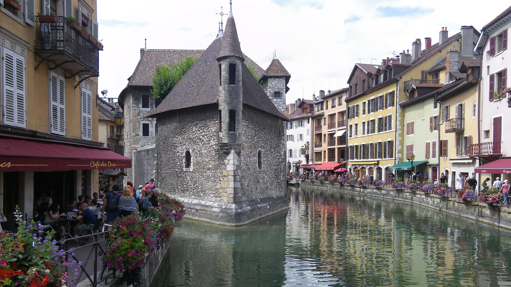
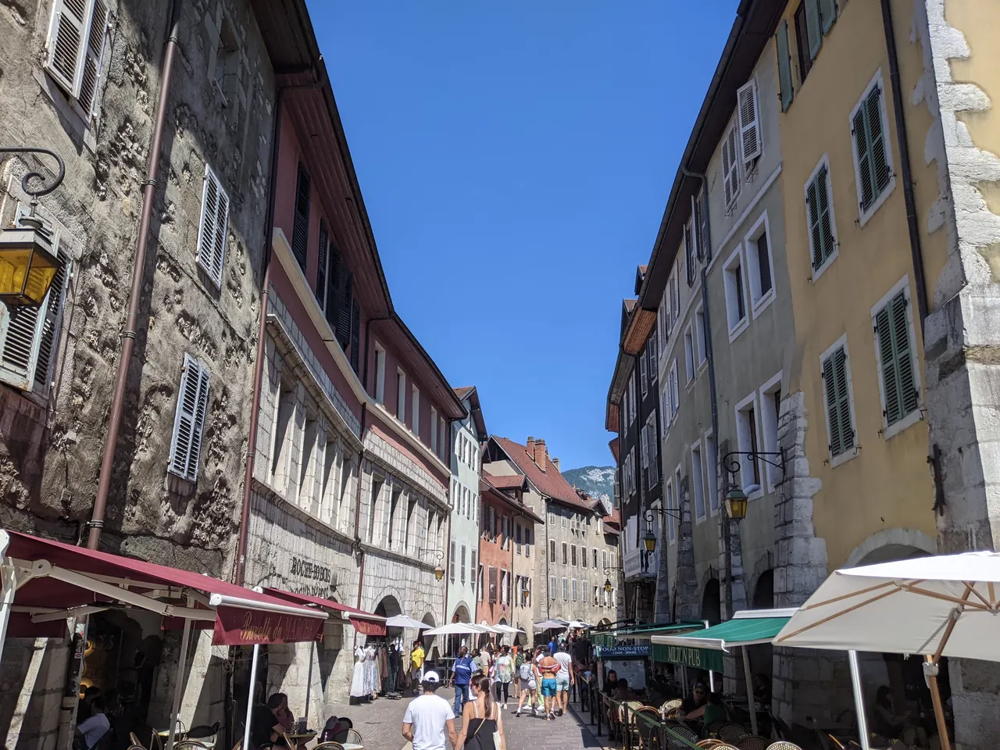
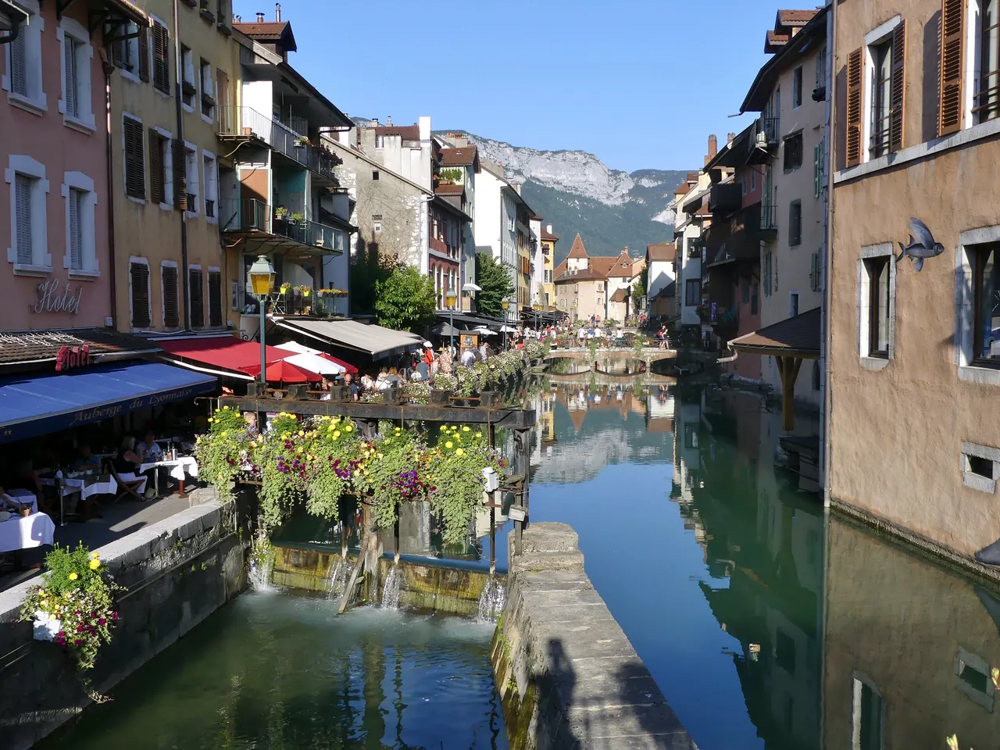
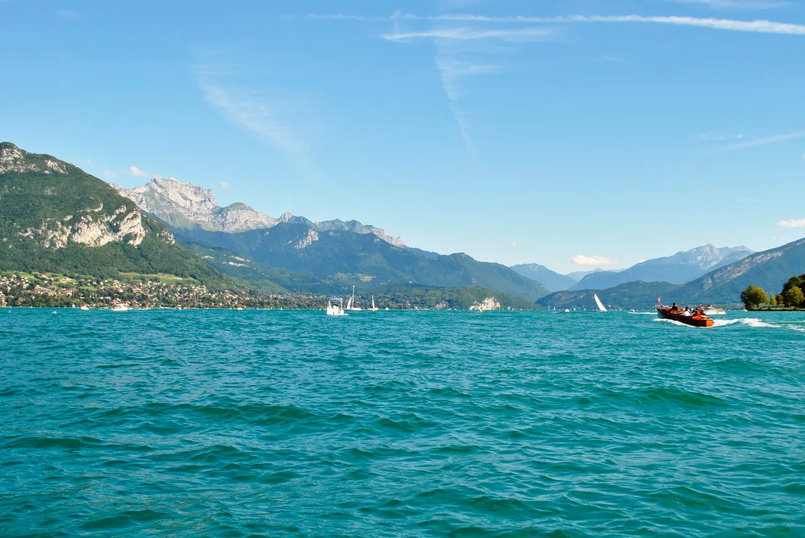

{kind=link}
.jpg){kind=link}
.JPG){kind=link}
{kind=link}
관광·미술관
Nous avons déjà des billets.
이미 표가 있습니다.
누 자봉 데자 데 비예

프랑스 오트사부아(Haute-Savoie) 주 알프스 산맥 북서쪽 자락에 자리 잡은 유럽에서 가장 깨끗하고 투명한 에메랄드빛 안시 호수(Lac d'Annecy)와 중세 운하의 도시다.
호수에서 흘러나온 프랑스에서 가장 짧은 강인 티우(Thiou) 운하가 구도심 전체를 감싸 흐르며, 운하 양옆으로 파스텔톤 가옥과 꽃 화분, 아치형 석조 다리가 어우러져 '알프스의 베네치아(La Venise des Alpes)'라는 찬사를 받는다.
운하 한가운데 뱃머리처럼 솟은 12세기 석조 수상 요새 팔레 드 릴(Palais de l'Île)과 언덕 위 제네바 백작의 안시 성채(Château d'Annecy), 그리고 호숫가 거대한 플라타너스 숲인 유럽 정원(Jardins de l'Europe)과 사랑의 다리(Pont des Amours)가 한 도보권 안에 완벽하게 응축되어 있다.
"기차역에서 내려 불과 5분 만에 꽃으로 뒤덮인 중세 운하 골목으로 진입하고, 곧이어 눈부신 알프스 설산과 청록색 호수가 파노라마로 펼쳐지는 완벽한 당일치기 여행지다." 운하를 따라 팔레 드 릴과 구시가지를 산책하고, 사부아 전통 타르티플레트나 호수 농어 요리로 점심을 먹은 뒤, 사랑의 다리를 건너 호숫가 파키에(Pâquier) 잔디밭을 거니는 4~5시간 일정이 완벽하다.
| 운영시간 | 여름(6/1~9/30) 10:30~18:00 / 겨울(10/1~5/31) 10:00~12:30, 14:00~17:30. 9/23은 여름 시간 적용 |
|---|---|
| 휴무 | 구시가지 거리는 연중무휴 (공공 공간) |
| 예약 | 구시가지 산책 예약 불필요. 박물관도 개인 방문 예약 불필요(단체 예약 04 85 46 76 78) |
| 메모 | Palais de l'Île·Musée-Château 는 화요일 휴관이다. |
리옹의 부숑 요리와는 완전히 다른 알프스 산악 지대의 풍성한 유제품 요리를 맛볼 수 있다. - 타르티플레트 (Tartiflette): 얇게 썬 감자와 베이컨, 양파 위에 고소한 사부아 특산 르블로숑(Reblochon) 치즈를 통째로 얹어 오븐에 구워낸 요리. - 사부아 퐁뒤 (Fondue Savoyarde): 보포르, 콩테, 에멘탈 치즈를 화이트 와인에 녹여 바게트 빵을 찍어 먹는 알프스 대표 요리. - 필레 드 페르슈 (Filets de perche): 안시 호수에서 갓 잡은 민물 농어 필레를 버터와 레몬 소스로 구워낸 요리.
| 항목 | 상세 정보 |
|---|---|
| 위치 | 74000 Annecy, Haute-Savoie |
| 철도 접근 (강력 권장) | Lyon Part-Dieu역에서 TER 직행 열차로 약 1시간 50분~2시간 소요 (배차 간격 1~2시간, 사전 좌석 예약 불필요 일반 열차) |
| 기차역 ↔ 구도심 연결 | Gare d'Annecy역 출구에서 구도심 운하 입구까지 평탄한 도로 도보 6~8분 직결 (도보 이동 완벽) |
| 팔레 드 릴 운영 | 수요일–월요일 10:30–18:00 (화요일 휴관, 외관 조망 상시 무료) / 내부 박물관 성인 €4.00 |
| 유람선 (Compagnie des Bateaux) | 호수 1시간 순환 유람선 수시 운항 (성인 약 €17.00, 사랑의 다리 옆 선착장) |
| 시장 (Market) | 매주 화·금·일요일 오전 (07:00–13:00): 구도심 Sainte-Claire 골목을 따라 열리는 알프스 치즈·샤퀴테리 시장 |



Nous avons déjà des billets.
이미 표가 있습니다.
누 자봉 데자 데 비예
On peut prendre des photos ?
사진 찍어도 되나요?
옹 푀 프랑드르 데 포토
Où commence la visite ?
관람은 어디서 시작하나요?
우 코망스 라 비지트

유럽 최대 규모의 순수 보행자 붉은 자갈 광장(6.2ha)이자 리옹 지리망의 원점(Point Zéro). 중앙의 루이 14세 기마상과 푸르비에르 언덕 조망, 남서쪽 생텍쥐페리와 어린 왕자 기념 동상.

19세기 리옹 비단 산업의 심장이자 '일하는 언덕'. 4m 높이 자카르(Jacquard) 직조기를 위해 설계된 층고 높은 카뉘 아파트, 1831년 노동자 봉기의 상징 6층 거대 계단 '쿠르 데 보라스(Cour des Voraces)', 크루아루스 대로 로컬 시장.

기원전 43년 로마 갈리아 수도 '루그두눔'이 시작된 발원지이자 리옹의 상징 '기도하는 언덕'. 기원전 15년 로마 대극장·오데옹과 19세기 비잔틴 모자이크 바실리카, 손강·프레스킬·알프스를 잇는 3단 대파노라마.

프랑스 요리의 교황 폴 보퀴즈의 이름을 딴 세계 최고의 실내 미식 시장. 프랑스 최고 장인(MOF)들의 50여 개 최고급 식료품점, 메르 리샤르 생마르슬랭 치즈, 시빌리아 샤퀴테리, 현장 굴·해산물 바.

1857년 조성된 117ha 면적의 프랑스 최대 도심 생태 공원. 16ha 인공 호수, 19세기 거대한 철골 유리 온실 식물원, 무료 야외 동물원과 국제 장미원(Roseraie).

15~16세기 번영했던 유럽 최대 규모의 르네상스 건축 지구이자 유네스코 세계유산. 건물과 안뜰을 관통해 미로처럼 이어진 리옹 고유의 비밀 통로 '트라불(Traboules)'과 생장 대성당.